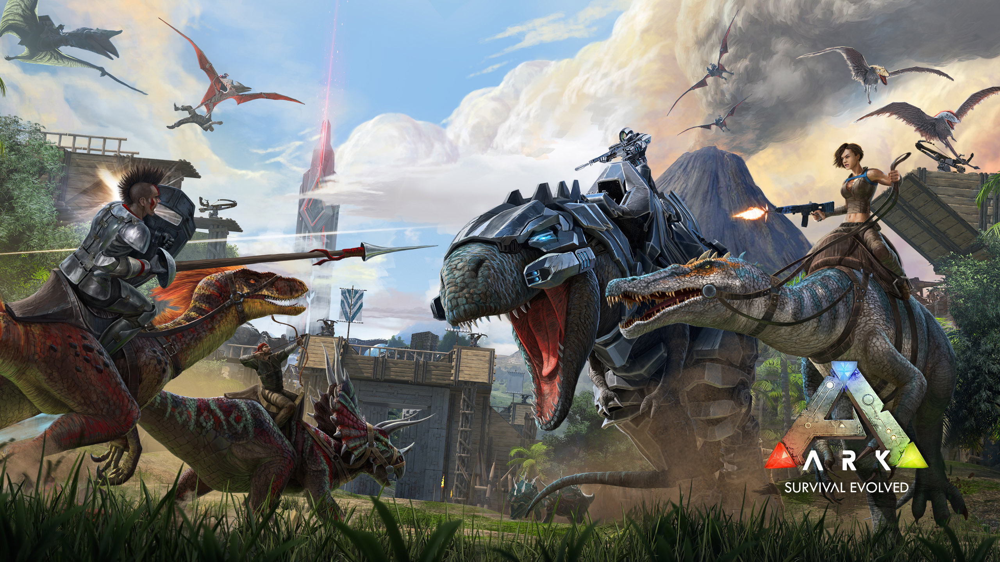

东方project是神主ZUN带领的日本同人游戏社团上海爱丽丝幻乐团所制作的系列游戏，游戏在经过了前几代旧作的沉淀后，诞生出了一款名叫《东方红魔乡》的新作，这款新作的世界观、人物、基础游戏系统都与前作截然不同，它一经推出就收获到了广大同人爱好者的好评，并且作为东方project系列创作者的神主ZUN完全不介意别人对其原作进行二次创作，这使得东方project系列得以快速的在动漫爱好者中扩散式传播，也正因如此东方project系列在2000年到2010年左右火遍了日本和中国的ACG圈。现如今东方project系列在老宅中可以说得上是人尽皆知了，而最近这样一款火热的游戏系列ip的创始人，神主ZUN亲自在B站上发布了问候视频，并且正式宣布入驻b站。 神主ZUN在视频中谈到，他去年年底去了上海的独立游戏展，发现里面有个东方project区，他就过去参加了，结果发现里面异常热闹，来的人多到差点把会场挤爆，因此他也看到了中国的东方project爱好者的强大热情，也是从那次起，他知道了中国有个叫Bilibili的弹幕视频网站，而这个网站上有很多东方project的作品，所以他本次是作为上海爱丽丝幻乐团的创始人身份，正式入驻Bilibili，并在入驻B站后发布了一部被东方爱好者戏称为‘中国东方二创第一部法典’的东方project使用规定。
在杉果、steam平台上原价98，现如今在steam上可享有半价，仅需49元即可入手！紧张的氛围将恐惧感融入现代战争中，最真实的战争，如果你是一个射击游戏迷，不妨入手这款游戏吧！
《模拟老大爷》是由《模拟山羊》(Goat Simulator)的制作组所创作，由《人类一败涂地》(Human Fall Flat)发行商推出的一款无厘头的老年人暴走沙盒游戏。在不远的未来，人们已经不再生孩子了，而你是一位退休的老人。那些不懂感激的后浪们宁愿打电子游戏，也不愿真正去工作，所以没人来付养老金。因为没人来支付你的生活费，你——和这个世界上的其他的老人一样——没有其他选择，只能靠自己生存下去。 你该如何在一个想要你快点死掉的世界中生存下去？本周限免，还等什么呢！

你被困在一座神秘之岛上，必须学会生存。善用自己的精明和智慧，猎杀或驯服岛上漫游的原始生物，与其他玩家互动、竞争和厮杀，生存下来，称霸一方……并逃出生天！真实还原恐龙时代，各种怪物的扑面而来，紧张刺激的生存，你一定会爱上这款游戏的！